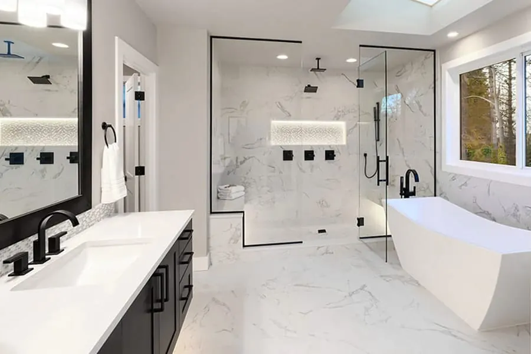
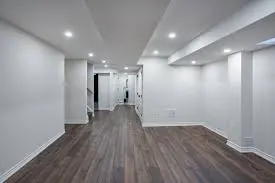
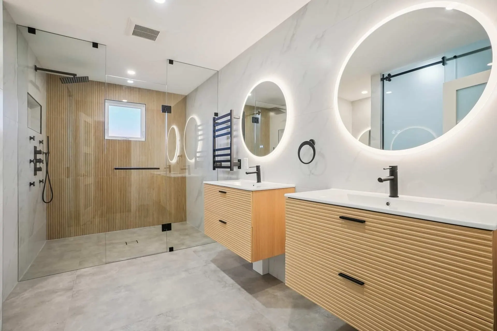

Interlock & Hardscaping
Driveways, Patios &
Walkways
Interlock transforms your driveway, patio, or walkway into a stunning, durable hardscape. We use premium paving stones that lock together for long-lasting stability through Ottawa's freeze-thaw cycles — no cracking, no crumbling, and easy to repair if ever needed.
Interlock Applications
What We Install
Why Interlock
Better Than Concrete
or Asphalt
Ottawa Winter-Proof
Individual paving stones flex independently through freeze-thaw cycles. Unlike concrete or asphalt, interlock doesn't develop stress cracks from heaving. If a stone ever shifts, it can be reset individually — no saw cutting, no patching, no mess.
Stunning Curb Appeal
Dozens of stone colours, textures, and laying patterns give you complete control over the look. From classic herringbone to contemporary linear, we design installations that complement your home's architecture and landscaping.
Easy to Repair
One of interlock's best-kept advantages: if a utility ever needs to dig up your driveway, the stones are simply lifted, the work is done, and the stones are relaid — exactly as before. No patching, no colour mismatch, no permanent scar.
Home Renovations
Interior & Exterior
Renovations
From kitchen upgrades to full basement finishes, AMA United handles interior and exterior renovations that add real value and lasting comfort to your home. Every renovation project is handled by our own crew — no subcontracting, no surprises.


Renovation Services
Inside & Out — We
Handle It All
Our Work
Interlock & Renovation Projects

How It Works
Our Process
Free Consultation
We visit your property, assess the scope, and discuss your goals — whether it's a new driveway or a full basement.
Detailed Quote
Itemized written quote covering materials, labour, timeline, and any demolition or removal included.
Expert Execution
Our crew handles all demo, prep, installation, and finishing — keeping you updated at every stage.
Final Sign-Off
We walk through the completed work together. Not done until every detail meets your expectations.
Questions
Interlock & Renovations FAQs
Service Areas